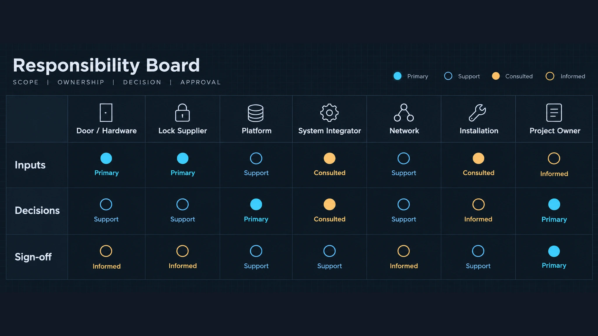
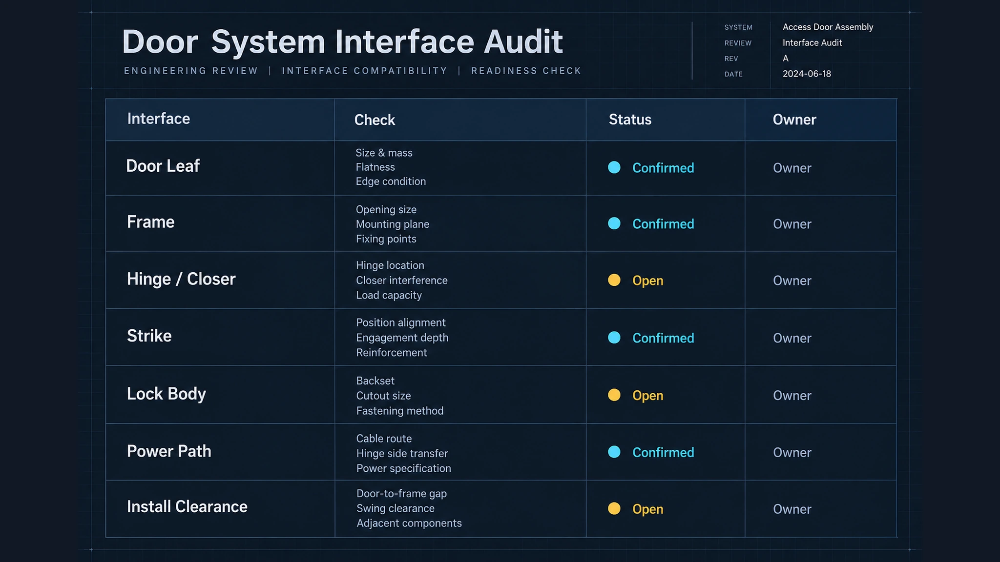

Matriz de interfaces para projetos de smart lock: ferragens de portas, fornecedor da fechadura, plataforma de acesso, integrador, rede/operação, instalador e responsável de projeto.
1. Limite de decisão

Um projeto de smart lock (fechadura inteligente) pode falhar numa interface mesmo quando cada interveniente considera o seu trabalho concluído. A matriz regista quem fornece informação, quem a recebe, o que deve ser confirmado (confirmação de receção) e quem investiga uma falha. Abrange as ferragens de porta, o fornecedor da fechadura, a plataforma de acesso, o integrador, a rede/operação, o instalador e o responsável de projeto. Não confirma capacidades do produto, certificações nem resultados do projeto.
2. Intervenientes do projeto

Registe organização, contacto, autoridade de decisão, informação fornecida, resposta esperada e via de escalation. A parte das ferragens confirma porta, marco e limitações mecânicas. O fornecedor confirma a referência de configuração. A plataforma define dados e limites. O integrador coordena dependências. A rede/operação, o instalador e o responsável de projeto devem confirmar os itens que lhes dizem respeito. Uma função em falta é um risco de interface.
3. Interface das ferragens

Registe identificador da porta, tipo de abertura, marco da porta (batente), preparação, limitações mecânicas, percurso de alimentação e informação necessária à instalação. Separe condições confirmadas de condições dependentes do local. Classifique cada problema como de abertura, de configuração, de instalação ou como pressuposto não registado.
4. Interface da plataforma de acesso
Defina identificadores, eventos, estados, titularidade dos comandos, pressupostos sobre contas e permissões, e prova de receção. Uma referência à plataforma não confirma todas as configurações. Perante a ausência de um evento, verifique se foi gerado, transmitido, recebido, interpretado ou apresentado ao utilizador — etapas que podem pertencer a intervenientes diferentes.
5. Interface de rede e operação
Registe responsabilidade da ligação, pré-requisitos, contactos de segurança, monitorização, manutenção, condições offline e via para comunicar falhas operacionais. Uma falha do equipamento não deve ser automaticamente atribuída à rede. Separe alimentação, dispositivo, transporte, processamento da plataforma e apresentação ao utilizador.
6. Entrega da fase-piloto

A entrega da fase-piloto transfere informação e não prova todas as condições do projeto. Defina âmbito, intervenientes, registos, pontos em aberto, período de observação e autoridade de aceitação. Registe identificador instalado, configuração, contactos, limitações e próximas ações. Em caso de falha, registe sintoma, hora, local, última alteração e responsável pela investigação.
7. Matriz de responsabilidades
R = realiza o item; A = responde pela decisão ou aceitação (presta contas); C = consultado; I = informado.
| Item | Ferragens | Fornecedor | Plataforma | Integrador | Rede/Operação | Instalador | Resp. projeto |
|---|---|---|---|---|---|---|---|
| Dados da abertura | R/A | C | I | C | I | C | A |
| Referência da configuração | C | R | C | A | I | C | I |
| Mapeamento de dados | I | C | R | A | C | I | I |
| Pré-requisitos de rede | I | C | C | A | R | I | I |
| Desvio na instalação | C | C | I | A | I | R | I |
| Observação da fase-piloto | C | C | C | R | C | C | A |
| Triagem da falha | C | C | C | R | C | C | A |
| Entrega e pontos em aberto | C | C | C | R | C | C | A |
A matriz não substitui contratos nem evidência técnica. Atualize-a quando mudarem os papéis ou as autoridades de decisão.
8. Conclusão
A matriz torna visíveis as dependências e liga cada entrega a um responsável, à informação fornecida, à confirmação de receção e ao caminho de tratamento de falhas. É adequada a projetos com vários intervenientes, sem descrever uma solução hoteleira ou residencial.
Contactar
Envie a lista de intervenientes, questões de interface, registos de entrega e falhas conhecidas para criar a matriz de interfaces do seu projeto.